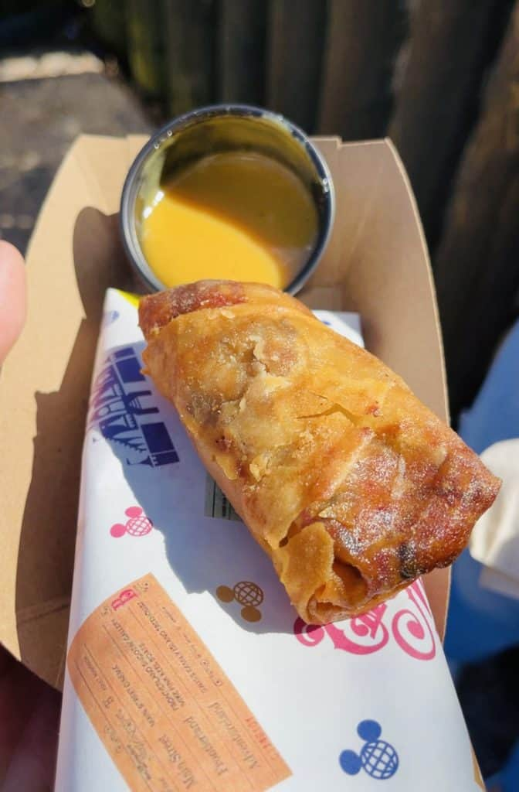
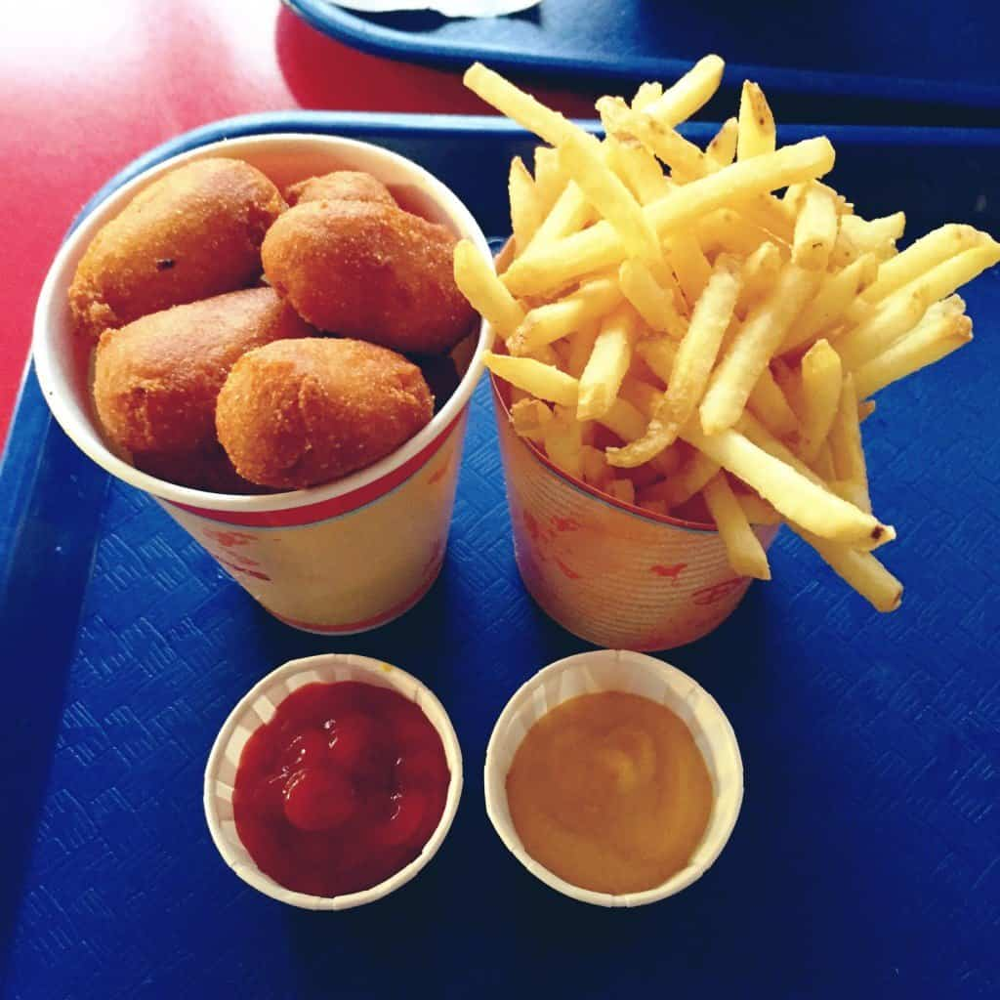

Magic Kingdom
- 1. Dole Whip
-

Dole whip is a very popular disneyworld's snacks that you can get in Magic Kingdom. It's usually a combination of pineapple juice + pineapple ice cream. They also have more variations to dole whip. You can get dole whip from Aloha Isle.
- 2. Cheeseburger Spring Roll
-

You can get this from Spring Rolls cart in front of the main Adventureland entrance.
- 3. Mini Corn Dogs
-

You can get this from Casey's Corner
- 4. Fruit and Nutella Waffle Sandwich
-

You can get this from Sleepy Hollow Inn (before 5pm)